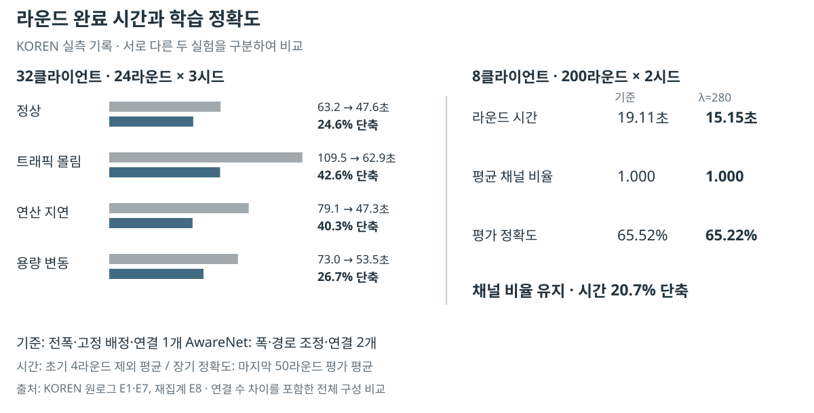

최종평가 자료
2026.09.30 · 제공된 보고서·과제개요 양식 반영
분할 연합학습의 연산·통신 병목을 함께 다루는 이유, 모델과 중계 경로의 제어 방법, KOREN·Jetson 실측과 학습 결과를 정리했습니다.
최종보고서 · 10/2 개정문체·문단 간격 정리 · 26쪽 · 본문·참고문헌 21쪽 · 그림 6개·표 12개
전체 자료PDF·편집용 DOCX·PNG·SVG·MP4·제출 전 확인사항
피드백 32개 항목의 반영 위치와 구현 근거 · 대조 기록 JSON
네트워크 구성도
클라이언트, 공유 접속 구간, KOREN 중계 VM과 학습 서버를 한 그림에 표시했습니다. 점선은 스케줄러의 관측·설정, 실선은 학습 데이터 흐름입니다.


제어 파이프라인
상태 측정 → 설정 선택 → 실행·결과 수집의 흐름을 보여줍니다.


텐서 분할·재조립
조각의 위치, 두 전송 경로와 모든 조각을 받은 뒤의 복원을 표시했습니다.


병원 간 공동 학습의 활용 예시
각 기관에 데이터를 보관하고, 자원 상태에 맞춰 공동 모델 학습에 참여하는 향후 적용 시나리오입니다.


핵심 결과
32클라이언트의 단기 시간 비교와 8클라이언트의 장기 정확도 평가를 구분했습니다. 기준 연결 1개와 결합 연결 2개의 차이를 포함한 전체 시스템 비교입니다.
